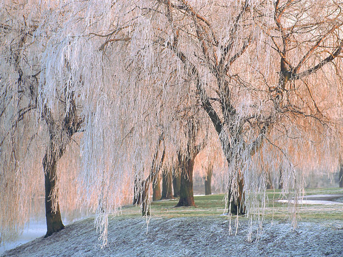

Cassidy's Willow side
Willow trees are by far top tier trees. Yes they have a shorter life span, but soak up every little bit of their lives. They use this time by being known as fast growers, and knowing the best place to grow by always being by water. They are thirsty boys and girlies, and it makes them the elite growers. Being about to grow as wide as they are tall.
They also have a phenomenal name, and are quite easily identifiable, even though they have 400 species. The leaves are shaped like tears, which gives them the name of weeping willows.
They may be called weeping but they are just making sure they are close to all the good things in the world, constantly grounding themselves, and being close to the earth, water, and soaking in all the sun being wide as hell.
Willow trees are where memories are made, they are the picture perfect setup, always near a pond, perfect spot for photos, picnics, frog hunting, shade, and their leaves are perfect when falling off the tree for crown and bracelet making. They are the ultimate climbing trees as well.
Willow trees are environmental wizards, the compound found in willow bark is similar to a traditional pain reliever, and male deers will purposely seek out willow trees when growing new antlers to alleviate the inch as the new antlers develop. You also find willow trees in a variety of cultural expressions, whether in the arts, or in spirituality. Willow trees often appear as a symbol of death and loss, but they bring magic and mystery to people’s minds as well. Such as druids consider willow trees sacred, and for the Irish they are one of seven sacred trees. Willow trees are associated with love, fertility and young women’s right of passage.

If you respect women, you will love willow trees.
Diego's Spruce side
Spruce tree is the best tree because it reminds me of home. This beautiful folliage is the tree of the north. Spruce are also massive, spanning 20 to 60m.
They also produce pinecones and have a distinct needle like texture to their greenery. It's timber is also great for building material. The timber from spruce trees are also used in piano and violins. That's right this tree is even used for art. It is even a source of vitamin C, and can be used for medicine. What more could you want from a tree.
Spruce have 40 different kinds of species. Impressive right. The pulp from spruce is also very important to the paper industry. We all love Christmas, that's right spruce trees can be grown for use as Christmas trees as well. Spruce trees are in Minecraft. There's no willow tree in Minecraft. Makes you think. Spruce tree's also provide housing for animals, and keeps them warm during the winter. And they also act as a source of food for deer, porcupines, elk, bear, and rabbits. Spruce is the tree of the soul, we love spruce.